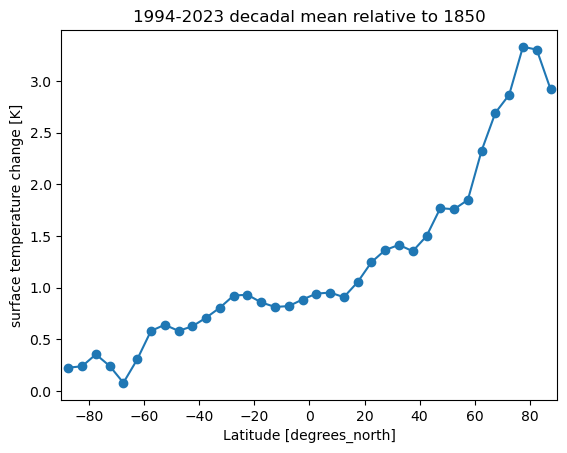

Observed Polar Amplification in the Historical Period#
# mount google drive
#from google.colab import drive
#drive.mount('/content/drive')
#import sys
#sys.path.append('/content/drive/MyDrive/')
# load modules and packages
import xarray as xr
import matplotlib.pyplot as plt
---------------------------------------------------------------------------
ModuleNotFoundError Traceback (most recent call last)
Cell In[1], line 10
1 # mount google drive
2
3 #from google.colab import drive
(...)
7
8 # load modules and packages
---> 10 import xarray as xr
11 import matplotlib.pyplot as plt
ModuleNotFoundError: No module named 'xarray'
# read NOAAGlobalTemp v6.0.0 (Huang et al. 2023)
# (https://www.ncei.noaa.gov/products/land-based-station/noaa-global-temp)
# (https://www.ncei.noaa.gov/metadata/geoportal/rest/metadata/item/gov.noaa.ncdc%3AC01704/html)
ds = xr.open_dataset('NOAAGlobalTemp_v6.0.0.nc')
ds
<xarray.Dataset> Size: 22MB
Dimensions: (time: 2091, lat: 36, lon: 72, z: 1)
Coordinates:
* time (time) datetime64[ns] 17kB 1850-01-01 1850-02-01 ... 2024-03-01
* lat (lat) float32 144B -87.5 -82.5 -77.5 -72.5 ... 72.5 77.5 82.5 87.5
* lon (lon) float32 288B 2.5 7.5 12.5 17.5 ... 342.5 347.5 352.5 357.5
* z (z) float32 4B 0.0
Data variables:
anom (time, z, lat, lon) float32 22MB ...
Attributes: (12/66)
Conventions: CF-1.6, ACDD-1.3
title: NOAA Merged Land Ocean Global Surface Te...
summary: NOAAGlobalTemp is a merged land-ocean su...
institution: DOC/NOAA/NESDIS/National Centers for Env...
id: gov.noaa.ncdc:C00934
naming_authority: gov.noaa.ncei
... ...
time_coverage_duration: P174Y3M
references: Vose, R. S., et al., 2012: NOAAs merged ...
climatology: Climatology is based on 1971-2000 monthl...
acknowledgment: The NOAA Global Surface Temperature Data...
date_modified: 2024-04-08T19:27:01Z
date_issued: 2024-04-08T19:27:01Z# calculate annual mean
dsym=ds.groupby('time.year').mean(dim='time')
dsym
<xarray.Dataset> Size: 2MB
Dimensions: (lat: 36, lon: 72, z: 1, year: 175)
Coordinates:
* lat (lat) float32 144B -87.5 -82.5 -77.5 -72.5 ... 72.5 77.5 82.5 87.5
* lon (lon) float32 288B 2.5 7.5 12.5 17.5 ... 342.5 347.5 352.5 357.5
* z (z) float32 4B 0.0
* year (year) int64 1kB 1850 1851 1852 1853 1854 ... 2021 2022 2023 2024
Data variables:
anom (year, z, lat, lon) float32 2MB -0.08197 -0.4426 ... 4.278 4.001
Attributes: (12/66)
Conventions: CF-1.6, ACDD-1.3
title: NOAA Merged Land Ocean Global Surface Te...
summary: NOAAGlobalTemp is a merged land-ocean su...
institution: DOC/NOAA/NESDIS/National Centers for Env...
id: gov.noaa.ncdc:C00934
naming_authority: gov.noaa.ncei
... ...
time_coverage_duration: P174Y3M
references: Vose, R. S., et al., 2012: NOAAs merged ...
climatology: Climatology is based on 1971-2000 monthl...
acknowledgment: The NOAA Global Surface Temperature Data...
date_modified: 2024-04-08T19:27:01Z
date_issued: 2024-04-08T19:27:01ZNote: Data for 2024 only contails 3 months and therefore should be excluded.
# select baseline and targeted time period
T0=dsym.anom.isel(year=slice(0,1)).mean(dim='year')
T=dsym.anom.isel(year=slice(-12,-2)).mean(dim='year')
(T-T0).mean(dim='lon').plot(marker='o')
plt.xlim([-90,90])
plt.ylabel('surface temperature change [K]')
plt.title('1994-2023 decadal mean relative to 1850')
plt.show()

Note: Computing the local linear trend would probably give more smoother spatial pattern.
import json
import openai
import os
def load_api_key(secrets_file="/Users/kaichiht/openai.json"):
with open(secrets_file) as f:
secrets = json.load(f)
return secrets["OPENAI_API_KEY"]
# Set secret API key
# Typically, we'd use an environment variable (e.g., echo "export OPENAI_API_KEY='yourkey'" >> ~/.zshrc)
# However, using "internalConsole" in launch.json requires setting it in the code for compatibility with Hebrew
api_key = load_api_key()
openai.api_key = api_key
%reload_ext jupyter_ai
os.environ["OPENAI_API_KEY"]=openai.api_key
UsageError: Line magic function `%%ai` not found.
%%ai chatgpt
I have a data x(lat), which is a function of lat. Can you provide a python code using Legendre polynomial to decompose the data?
import numpy as np
from scipy.special import legendre
import matplotlib.pyplot as plt
# Generate synthetic data
lat = np.linspace(-90, 90, 100)
x = np.sin(lat*np.pi/180)
# Define the Legendre polynomial degree
degree = 5
# Compute Legendre polynomials
legendre_polynomials = np.zeros((degree+1, len(lat)))
for i in range(degree+1):
legendre_polynomials[i,:] = legendre(i)(np.cos(lat*np.pi/180))
# Compute coefficients
coefficients = np.zeros(degree+1)
for i in range(degree+1):
coefficients[i] = np.sum(x*legendre_polynomials[i,:]) / np.sum(legendre_polynomials[i,:]**2)
# Reconstruct the data
x_reconstructed = np.sum(coefficients[i]*legendre_polynomials[i,:] for i in range(degree+1))
# Plot original data and reconstructed data
plt.figure()
plt.plot(lat, x, label='Original Data')
plt.plot(lat, x_reconstructed, label='Reconstructed Data')
plt.legend()
plt.xlabel('Latitude')
plt.ylabel('Data x')
plt.title('Data Decomposition using Legendre Polynomials')
plt.show()
import numpy as np
from scipy.special import legendre
import matplotlib.pyplot as plt
# Generate synthetic data
lat = np.linspace(-90, 90, 100)
x = np.sin(lat*np.pi/180)
# Define the Legendre polynomial degree
degree = 5
# Compute Legendre polynomials
legendre_polynomials = np.zeros((degree+1, len(lat)))
for i in range(degree+1):
legendre_polynomials[i,:] = legendre(i)(np.cos(lat*np.pi/180))
# Compute coefficients
coefficients = np.zeros(degree+1)
for i in range(degree+1):
coefficients[i] = np.sum(x*legendre_polynomials[i,:]) / np.sum(legendre_polynomials[i,:]**2)
# Reconstruct the data
x_reconstructed = np.sum(coefficients[i]*legendre_polynomials[i,:] for i in range(degree+1))
# Plot original data and reconstructed data
plt.figure()
plt.plot(lat, x, label='Original Data')
plt.plot(lat, x_reconstructed, label='Reconstructed Data')
plt.legend()
plt.xlabel('Latitude')
plt.ylabel('Data x')
plt.title('Data Decomposition using Legendre Polynomials')
plt.show()
/var/folders/x1/nb2x5h5j08b2xx8xkc64r43m0000gn/T/ipykernel_7284/4091885872.py:23: DeprecationWarning: Calling np.sum(generator) is deprecated, and in the future will give a different result. Use np.sum(np.fromiter(generator)) or the python sum builtin instead.
x_reconstructed = np.sum(coefficients[i]*legendre_polynomials[i,:] for i in range(degree+1))

plt.plot(legendre_polynomials[2,:])
[<matplotlib.lines.Line2D at 0x11d1ba590>]